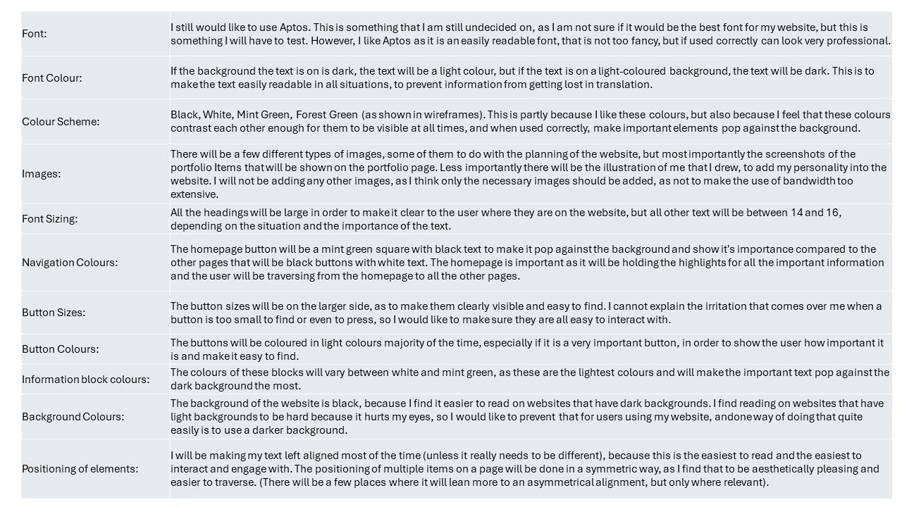

Design Log 4
Interface Elements- Home Page:
- The user will be able to scroll down to view everything on the page.
- There will be buttons on the top of the page for navigation.
- There will be buttons in each section as well that will take the user to the page that gives more information about the part that they are currently reading or looking at. Examples:
- The small part at the strat that will give more information about me will have a button that takes the user to the profile page.
- There will be a most recent blog post section that displays the most recent post that the user can then go to from the home page.
- The displayed portfolio pieces will be viewable from the home page.
- There will be a button that takes the user back to the top of the page.
- There will be links at the bottom of the page that link to social media profiles.
- Portfolio:
- The user will be able to scroll down to view everything on the page.
- There will be buttons on the top of the page for navigation.
- Each portfolio piece will have a link that takes them to more information about the item and links to where the projects can be found.
- Within each of the individual portfolio item pages there will be buttons at the bottom of the page that takes the user to the next or the previous portfolio item.
- There will be a button that takes the user back to the top of the page.
- There will be links at the bottom of the page that link to social media profiles
- Profile:
- The user will be able to scroll down to view everything on the page.
- There will be buttons on the top of the page for navigation.
- On this page there will be a CV section that will list the basic information, and when the user wants to know more about a certain thing, they can click on it and it will expand to show more information.
- There will be a button that takes the user back to the top of the page.
- There will be links at the bottom of the page that link to social media profiles.
- Design:
- The user will be able to scroll down to view everything on the page.
- There will be buttons on the top of the page for navigation.
- Here there will be an index page, that shows all the different posts along with a summary and a link to the post.
- On each individual post, there will be buttons on the bottom of the page that takes the user to the next or the previous post.
- There will be a button that takes the user back to the top of the page.
- There will be links at the bottom of the page that link to social media profiles.
- Essays:
- The user will be able to scroll down to view everything on the page.
- There will be buttons on the top of the page for navigation.
- On the main part of this page there will be the name of each essay, adn there will be a link that takes the user to the essay.
- On each individual essay, there will be buttons at the bottom of the page that takes the user to the next or the previous essay.
- There will be a button that takes the user back to the top of the page.
- There will be links at the bottom of the page that link to social media profiles.
- Blogs:
- The user will be able to scroll down to view everything on the page.
- There will be buttons on the top of the page for navigation.
- Here there will be an index of blogposts with their names and summaries displayed. These wll have a link that takes the user to the relevant post.
- At the bottom of each individual post there will be buttons that takes the user to the previous or to the next post.
- There will be a button that takes the user back to the top of the page.
- There will be links at the bottom of the page that link to social media profiles
- My goal and aesthetic for this website
- My goal for this website is to showcase who I am, what I can do, my skills and qualifications all in one place, on a darker, sleek website that is easy to travers and easy to read, and where a user can easily find the information they need, without having to struggle to do so.
Style Guide
